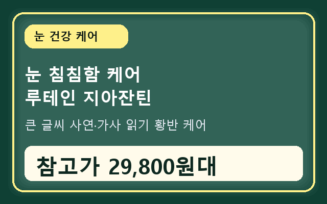

① 백운호·정통 트로트 감상용 효도 블루투스 라디오 스피커
큼직한 버튼과 풍성한 중저음 울림으로 거실이나 부엌에서 라디오 사연과 트로트를 편안하게 들으실 수 있습니다.
※ 네이버 쇼핑커넥트·쿠팡 파트너스 활동으로 수수료를 제공받을 수 있습니다.

🎙️ 전속 가상 트로트 가수 『백운호』 · 〈어머니의 봄날〉
가족을 위해 평생을 바치신 어머님·아버님, 당신이 우리 인생의 진짜 영웅입니다! 깊은 중저음 노래와 사연으로 따뜻하게 안아드립니다.
아래 화면 가운데 빨간 재생(▶) 버튼을 누르시면 시니어 가족분들의 실제 인생 사연과 가상 트로트 가수 백운호의 중저음 노래가 바로 재생됩니다.
🎙️ 위의 황금색 [▶ 지금 백운호 정규 완곡 바로 듣기] 버튼을 누르시면 광고 없이 백운호 정규 6곡 완곡이 바로 이어 재생됩니다.
텅 빈 새벽 부엌의 봄날 편지 · 무뚝뚝한 아버님이 챙겨두신 약봉지 편지와 함께 〈어머니의 봄날〉 · 〈백운호 연가〉 · 〈다시 피는 동백꽃〉 풀버전 3곡을 끊김 없이 이어 들으실 수 있습니다.
매일 아침 새로 배달되는 김쌤의 건강 안부 편지를 읽으시고, 1초 응원 하트와 출석 도장으로 활기찬 하루를 열어보세요.
어머님, 아버님 오늘 아침도 편안히 주무셨나요? 가상 트로트 가수 백운호의 중저음 〈어머니의 봄날〉 한 곡 틀어두시고 따뜻한 물 한 잔 꼭 챙겨 드세요 💚
비밀번호 없이 [① 1줄 응원 남기기]로 오늘의 안부를 보내시거나, 긴 인생 이야기는 [② 라디오 사연 보내기]로 접수해 주세요! 아래 담벼락의 👏 공감 박수를 누르시면 전국 어디서 접속하든 실시간으로 함께 숫자가 올라갑니다.
어려운 비밀번호 입력 없이 이메일 주소 하나만 적어주시면 매주 화·금 정규 라디오 방송과 건강 편지를 큰글씨 우편함으로 보내드립니다.
🔒 스팸 광고 없이 정직한 라디오 소식만 보내드리며, 모든 편지 하단에서 1클릭 수신거부가 가능합니다.
회원가입이나 유료 결제 없이 에메랄드 정장, 화이트 턱시도, 클래식 네이비 수트, 가을 코트, 전통 한복, 라디오 DJ룩 6가지 의상으로 기념사진과 카톡 안부카드를 만들어 보세요.
세월의 강을 건너온 어머님·아버님을 위해 탄생한 『백운호』의 데뷔 이야기와 대표곡 〈어머니의 봄날〉·〈백운호 연가〉·〈다시 피는 동백꽃〉 가사 해설을 큰 글씨로 읽어보세요.
복잡한 영문 결제창 없이 평소 쓰시던 네이버페이(Npay)와 쿠팡 공식관에서 라디오 청취·공연 관람·목과 눈 건강에 꼭 필요한 7가지 실속 준비물만 정직하게 모았습니다.
※ 네이버 쇼핑 커넥트·쿠팡 파트너스 활동의 일환으로 판매 발생 시 일정액의 수수료를 제공받습니다.
큼직한 버튼과 풍성한 중저음 울림으로 거실이나 부엌에서 라디오 사연과 트로트를 편안하게 들으실 수 있습니다.
※ 네이버 쇼핑커넥트·쿠팡 파트너스 활동으로 수수료를 제공받을 수 있습니다.

외출이나 공원 산책 중 유튜브 라디오를 오래 켜두셔도 배터리 방전 걱정 없이 든든하게 사용하실 수 있습니다.
※ 네이버 쇼핑커넥트·쿠팡 파트너스 활동으로 수수료를 제공받을 수 있습니다.

귀 안을 답답하게 막지 않아 오래 라디오 사연을 들어도 귀가 편안하고 주변 소리도 안전하게 들립니다.
※ 네이버 쇼핑커넥트·쿠팡 파트너스 활동으로 수수료를 제공받을 수 있습니다.

딱딱한 의자에서도 허리와 엉덩이 배김을 덜어주며 가볍게 접어 가방에 넣기 좋은 휴대용 방석입니다.
※ 네이버 쇼핑커넥트·쿠팡 파트너스 활동으로 수수료를 제공받을 수 있습니다.

실내 냉방이나 아침·저녁 쌀쌀한 바람에 어깨와 무릎이 시리지 않도록 포근하게 감싸주는 경량 보온 숄입니다.
※ 네이버 쇼핑커넥트·쿠팡 파트너스 활동으로 수수료를 제공받을 수 있습니다.

스마트폰으로 사연과 가사를 읽으실 때 노화로 감소할 수 있는 황반색소 밀도 유지를 돕는 눈 건강 제품입니다.
※ 네이버 쇼핑커넥트·쿠팡 파트너스 활동으로 수수료를 제공받을 수 있습니다.

건조한 환절기나 트로트 애창곡을 따라 부르신 뒤 칼칼한 목을 부드럽고 촉촉하게 적셔주는 스틱형 건강음료입니다.
※ 네이버 쇼핑커넥트·쿠팡 파트너스 활동으로 수수료를 제공받을 수 있습니다.
※ 네이버 쇼핑 커넥트·쿠팡 파트너스 활동의 일환으로 판매 발생 시 일정액의 수수료를 제공받습니다.
✅ 평생 100% 무료 약속: 『김쌤의 영웅라디오』 정규 방송, 백운호 대표곡, 가족 사랑방, 카톡 안부카드, 신곡 투표는 어떠한 유료 멤버십도 없이 평생 100% 무료입니다!
어머님·아버님이 골라주신 1위 주제로 백운호의 다음 달 헌정 신곡 가사와 멜로디가 제작됩니다!
5070 시니어 청취자분들께 정직하고 유익한 음향·공연·청취 건강 브랜드 협찬 및 라디오 사연 캠페인 제안은 아래 공식 이메일 창구로 문의해 주세요.